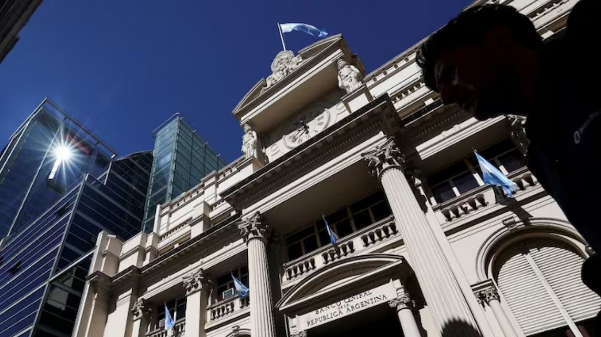

El BCRA baja los encajes bancarios: qué significa para los argentinos y cómo impacta en el crédito
El Banco Central de la República Argentina (BCRA) confirmó que no prorrogará la norma transitoria que vencía el 31 de marzo y que había elevado los encajes bancarios en 5 puntos porcentuales integrables en bonos. La medida implica una baja efectiva de los encajes, lo que libera liquidez en el sistema financiero y podría traducirse en más crédito disponible para empresas y familias.

El Banco Central de la República Argentina tomó una decisión que, aunque técnica, tiene consecuencias concretas para el sistema financiero y para el acceso al crédito de empresas y particulares. La autoridad monetaria confirmó que no renovará la norma transitoria que vencía el 31 de marzo, la cual había aumentado en 5 puntos porcentuales los encajes bancarios con la posibilidad de integrarlos en bonos del Estado. Al dejar vencer esa medida sin renovarla, el BCRA está efectivamente bajando los encajes al nivel previo a esa suba transitoria.
Para entender la importancia de esta decisión, vale explicar qué son los encajes. Se trata del porcentaje del dinero que los bancos reciben como depósitos de sus clientes que están obligados a mantener inmovilizado, sin poder prestarlo. Es, en pocas palabras, una reserva de seguridad que el Banco Central exige para garantizar que los bancos siempre tengan liquidez disponible ante eventuales retiros masivos. Cuando el BCRA sube los encajes, los bancos tienen menos dinero disponible para prestar, lo que contrae el crédito. Cuando los baja, ocurre lo contrario: los bancos quedan con más fondos para volcar al mercado en forma de préstamos.
La norma que ahora vence había sido implementada de manera transitoria como una herramienta de control monetario, exigiendo además que esos encajes adicionales fueran integrados en bonos del Estado, lo que también tenía un efecto sobre el mercado de deuda pública. Al no prorrogarla, el BCRA libera esa liquidez retenida, lo que en la práctica significa que los bancos dispondrán de más fondos para otorgar créditos. En el contexto actual, donde el mercado hipotecario está dando señales de reactivación con la baja de tasas de los créditos UVA y donde el consumo privado busca recuperarse, esta medida llega en un momento oportuno para acompañar ese proceso.
La decisión del BCRA es también una señal de confianza en la estabilidad del sistema financiero argentino. Bajar los encajes en un momento de mayor calma económica indica que la autoridad monetaria considera que los bancos tienen solidez suficiente para operar con menos colchón obligatorio, y que el riesgo de una corrida o retiro masivo de depósitos es bajo. Para los argentinos, el efecto más visible podría sentirse en las próximas semanas: más liquidez en el sistema suele traducirse en mayor oferta de crédito, tasas algo más competitivas y mejores condiciones para acceder a préstamos tanto personales como hipotecarios y empresariales.